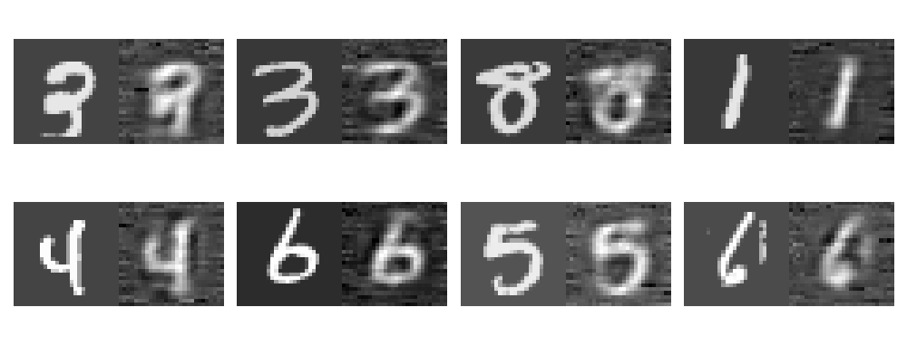
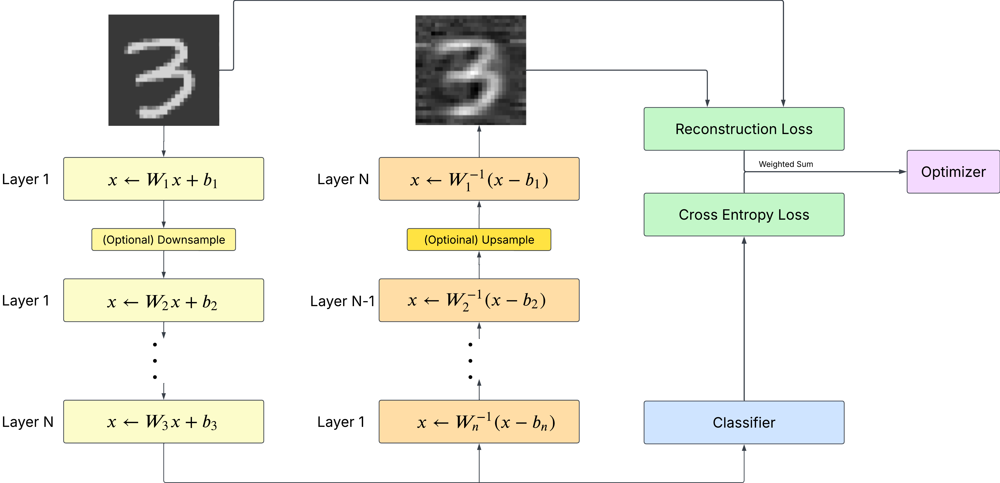

Introduction
Consider a simple experiment of a classifier over the MNIST digits dataset. During training, can a transformation with square layer weights $W_{ \{ 0...i\}}$ be reversed using $W^{-1}_{ \{ 0...i\}}$, applied in reverse order?Naturally, the answer is yes, at least for this simple data. A small proof of concept with very light training already achieve the results shown below quite quickly with >95% classification accuracy.

Training Flow
Figure 2 outlines the method in greater detail. Input is first sent through the layers of the network. The network is then reversed and all weights inverted. The transformed input is finally 'de-transformed' in this backwards order to regenerate the input. The transformed input is also sent to a final classification layer.The training loss is calculated as a weighted sum of a given reconstruction loss over the input and output, and the model's classification accuracy.

Continuation
These results imply a model's weights can be trained to serve two purposes (classification and generation). Leading me to two immediate questions.- Can this invertible property be recreated without expressly training the model in both directions?
- How many operations can exist in one set of trained weights, and what does it imply for model storage and 'tensor packing'?
I will document my findings as I continue investigation in my free time.